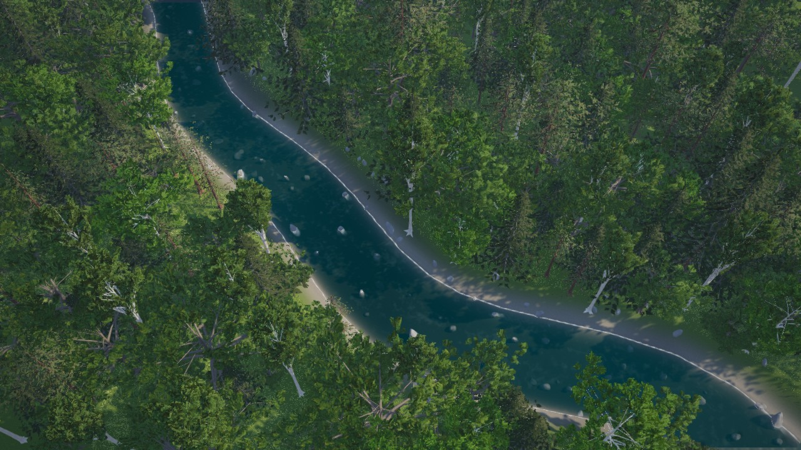

Core
Terrain, climate and biomes from a seed: height and climate at any world point in integer centimetres.
Engine systems / TerraWeave
Procedural terrain and nature
Terrain, vegetation and rocks from rules and a seed: a generator of rounded rocks, boulders, slabs and rubble with three LODs and placement by height, slope and masks.
in development since Nov 18, 2026

Terrain, climate and biomes from a seed: height and climate at any world point in integer centimetres.
Procedural trees with independent branch LODs, 8-view impostor atlases and billboards.
Vegetation visibility and instancing in patches — no entity per grass blade.
Kilometre-scale terrain and forest: HLOD, GPU region residency, seamless welding of near and far terrain.
Gridded wind, foliage health, erosion, roots, forest growth and recovery, clearings.
Deterministic world generation from a seed.
Stages 19–22: crack-free seams on slopes, shared normals.
Stage 32.
Stage 46, shared contract with NEREID.
Per the system's docs, GPU, integration and performance verification is not complete yet.
No entries yet. The system's agent adds them with its next stage.
Other systems